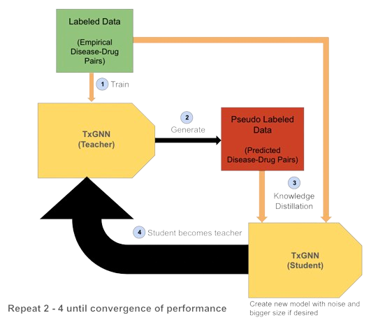

Building on the foundation of TxGNN, this project aims to significantly enhance drug-disease
link prediction capabilities within biomedical knowledge graphs, especially PrimeKG.
By integrating the innovative Noisy-Student model with Graph Neural Networks (GNNs),
the initiative seeks to surpass the existing benchmarks set by TxGNN,
offering a more sophisticated and accurate approach to predictive modeling in the biomedical domain.
This advancement promises to accelerate research in precision medicine and drug repurposing,
leveraging the strengths of TxGNN as a base while introducing novel computational strategies.
The collaboration of these technologies is set to transform the analysis of complex biomedical data,
facilitating a deeper understanding of disease mechanisms and broadening the horizons for therapeutic discovery.
PrimeKG:
PrimeKG is a sophisticated biomedical knowledge graph that serves as a critical foundation for this project,
integrating an extensive range of biomedical data. It encompasses genomic information, protein interactions,
chemical properties, and disease associations, providing a comprehensive framework for advanced research in drug discovery
and precision medicine. By leveraging PrimeKG, the project taps into a rich resource of interconnected data,
enabling the exploration of complex biological relationships and facilitating the development of innovative
approaches to predictive modeling in the biomedical field.
TxGNN:
TxGNN, pivotal in our project, harnesses Graph Neural Networks to delve into PrimeKG's rich biomedical data,
aiming for breakthroughs in drug-disease link prediction. Its architecture is strategically designed to uncover
new drug applications and elucidate disease pathways, marking a significant leap toward advancing precision medicine.
This model not only propels our understanding of complex biological interactions
but also sets the stage for innovative drug discovery and repurposing initiatives.
Noisy Student:
The Noisy Student methodology is a semi-supervised learning approach that improves upon traditional knowledge distillation techniques.
By training a larger, more capable student model using both labeled data and pseudo-labeled data generated by a teacher model,
the student model learns to generalize better by incorporating noise such as data augmentation or dropout. This method allows
for the iterative improvement of the model's accuracy and robustness, making it a powerful tool for enhancing performance
in a variety of machine learning tasks, including complex classification and prediction challenges.
Methods:
Our process begins with training the TxGNN model on labeled data to create a robust teacher model.
This teacher model is then utilized to generate pseudo labels through Knowledge Distillation, extending the dataset.
Subsequently, a second TxGNN model is trained, this time leveraging both the original labeled data and the newly created pseudo-labeled data,
with the addition of noise (such as VGAE, Dropout) to enhance the learning process. This cycle is repeated,
with each iteration refining the model's performance, until a point of convergence is reached, indicating optimal performance stability

Resutls:
We will Discuss results here and the charts will probably be animated also
Noisy-Student 4 Graphs
Knowledge Distillation to Enhance the Performance of Drug-Disease Link Prediction on Precision Medicine Knowledge Graph